Artifacts are sources of contamination in a study that bias research findings. So correcting research findings for bias is crucial to obtaining a accurate view of reality.
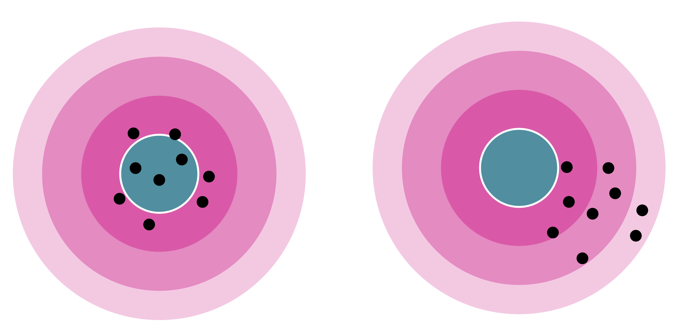
Introducing a New Open-Access Textbook
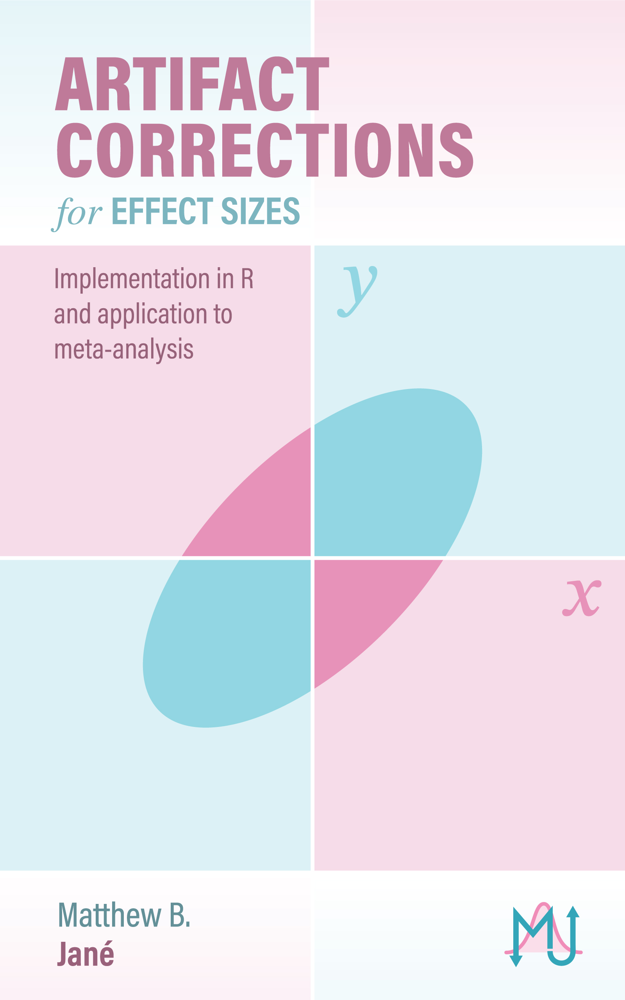
Open-Source
Living
R Code
Meta-Analysis
Quantifying Research Findings
Research findings often come in the form of some sort of summary statistic that reflects the relationship between variables (e.g., correlations, regression coefficients, odds ratios, mean differences).
These are referred to as effect sizes
Population vs Sample Effect Sizes
In social science we want to draw inferences about the population from a random sample.
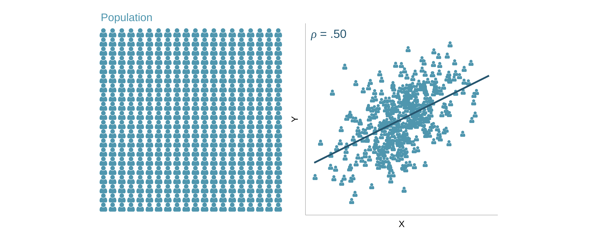
Population vs Sample Effect Sizes
In social science we want to draw inferences about the population from a random sample.
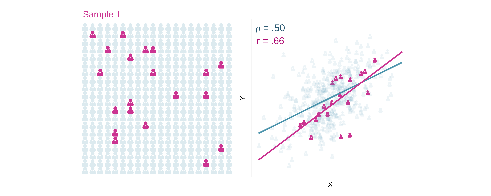
Population vs Sample Effect Sizes
In social science we want to draw inferences about the population from a random sample.
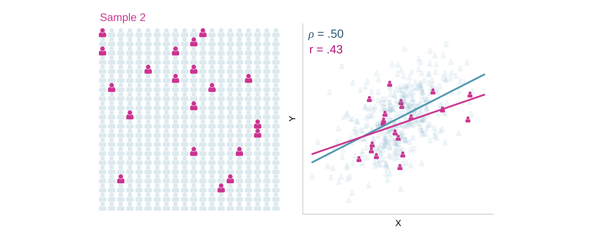
Population vs Sample Effect Sizes
In social science we want to draw inferences about the population from a random sample.
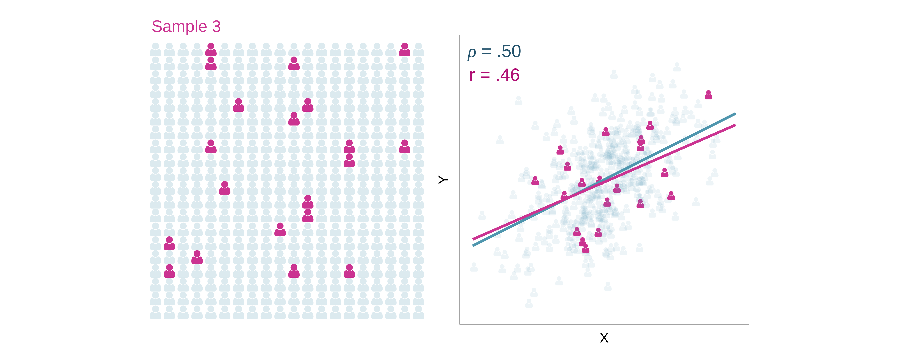
Sampling Distributions
Repeated random sampling from the same population, will generate a distribution of sample effect size estimates.
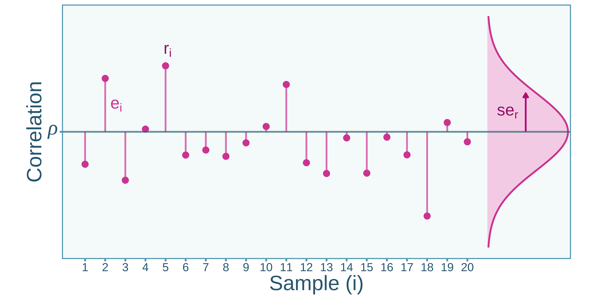
For a given study, \(i\), a correlation \(r_i\) is a function of…
Measurement is the process of quantifying attributes of something.
In social psychology, this may come in the form of surveys and questionnaires that are intended to measure some construct related to a set of behaviors, beliefs, personality, etc.
Imprecision in measurement can introduce severe bias on effect size estimates
Classical Test Theory
Observed (measured) scores \({\color{#666}X}\) can be broken down into true scores \({\color{#5fa6bcff}T}\) and errors \({\color{#d74ea2ff}E}\):
\[
{\color{#666}X} = {\color{#5fa6bcff}T} + {\color{#d74ea2ff}E}
\]Reliability describes the repeatability and consistency of observed scores. It is defined either as the correlation between parallel observed scores or the squared correlation between observed scores and true scores 1
Measurement error variance can come from multiple different sources1.
Random Response Error: Genuine randomness in responses. For example, natural fluctuations in response time. Estimators: all
Transient Error: Fluctuations that occur across time and environment. For example, fluctuations in scores attributable to illness or fatigue. Estimators: delayed estimators
Item/Test-Specific Error: Error due to the content in the measure. For example, inconsistent interpretations of test items. Estimators: internal consistency estimators
Rater-Specific Error: Variation in scores due to differences between raters. For example, Two movie critics rating the quality of a film. Estimators: inter-rater reliability
Correlation between Scores
Consider two sets of scores, \({\color{#666}X} = {\color{#5fa6bcff}T} + {\color{#d74ea2ff}E}_{\color{#666}X}\) and \({\color{#666}Y} = {\color{#5fa6bcff}U} + {\color{#d74ea2ff}E}_{\color{#666}Y}\). The reliability of both \(X\) and \(Y\) is \(.80\) and the true score correlation is \(.50\).
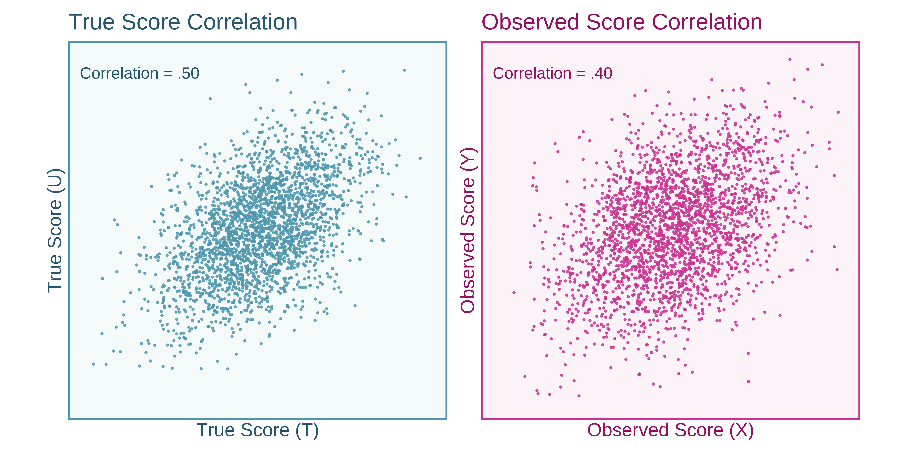
Observed Score Correlations as a Function of Reliability
d Values Corrected for Measurement Error:
---------------------------------------------------------------------------------------
value CI_LL_95 CI_UL_95 n n_effective
1 0.506 0.054 0.996 100 78.2
Artifact: GroupMisclassification
GroupMisclassification
Group misclassification is a type of measurement error where assigned group membership does not reflect actual group membership.
An example of this is Major Depressive Disorder (MDD) misdiagnoses.
Classification Reliability
The reliability of group classification can be computed from the \(\phi\) coefficient from a contingency table between two parallel group assignments.
\({\color{#666}g}={\color{#666}0}\)
\({\color{#666}g}={\color{#666}1}\)
\({\color{#666}g'}={\color{#666}0}\)
\(n_{\color{#666}00}\)
\(n_{\color{#666}10}\)
\({\color{#666}g'}={\color{#666}1}\)
\(n_{\color{#666}01}\)
\(n_{\color{#666}11}\)
The \(\phi\) coefficient will be denoted as \(\rho_{\color{#666}gg'}\). Note that \(\rho_{\color{#666}gg'}=\rho^2_{{\color{#666}g}{\color{#5fa6bcff}G}}\).
d Values Corrected for Measurement Error:
---------------------------------------------------------------------------------------
value CI_LL_95 CI_UL_95 n n_effective
1 0.57 -0.000878 1.24 100 47.9
Artifact: Artificial Dichotomization
Artificial Dichotomization
Artificial dichotomization refers to the procedure of creating a binary variable from a naturally continuous variable.
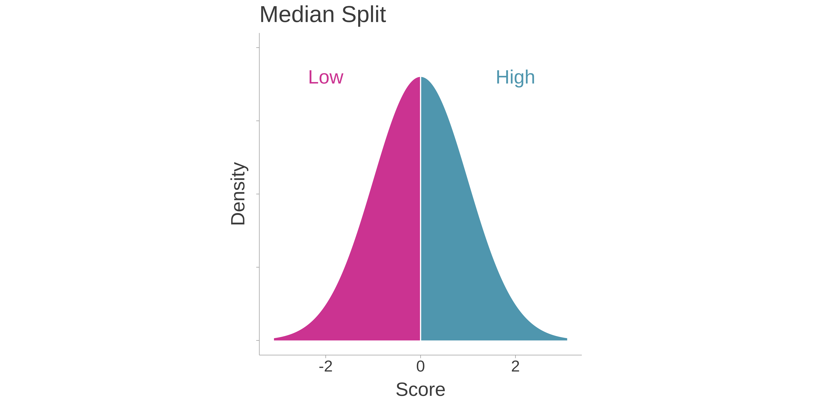
Whats the problem?
The dichotomized scores do not perfectly correlate with their the continuous scores.
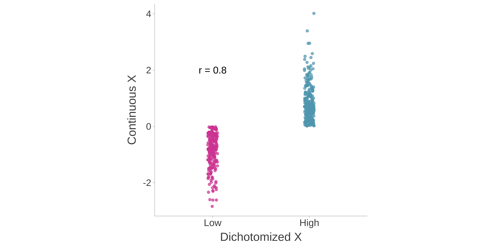
Whats the problem?
Consider two continuous scores, \({\color{#666}X}\) and \({\color{#666}Y}\), then we dichotomized \({\color{#666}X}\).
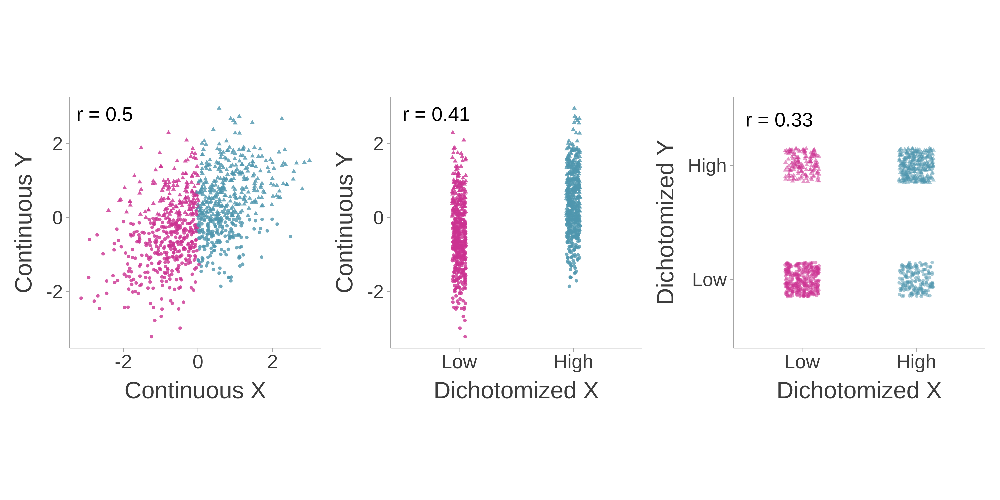
Artifact: Scale Coarseness
Coarseness
Scale coarseness refers to a continuous variable that has been discretized or put into bins. For example, a one-item Likert scale measuring a continuous variable like stress may look like:
Statement: I often feel stressed
Strongly Agree
Slightly Agree
Neither Agree or Disagree
Slightly Disagree
Strongly Disagree
Coarse Score does not Perfectly Reflect Continuous Score
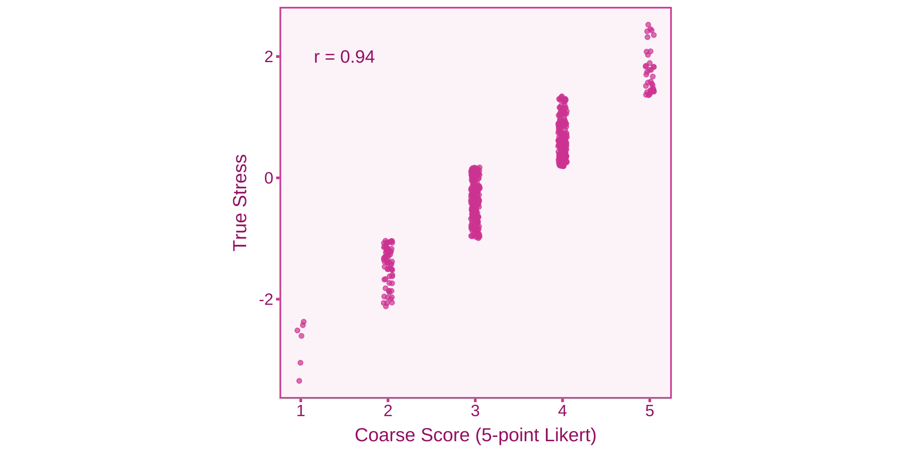
Attenuation of Correlations
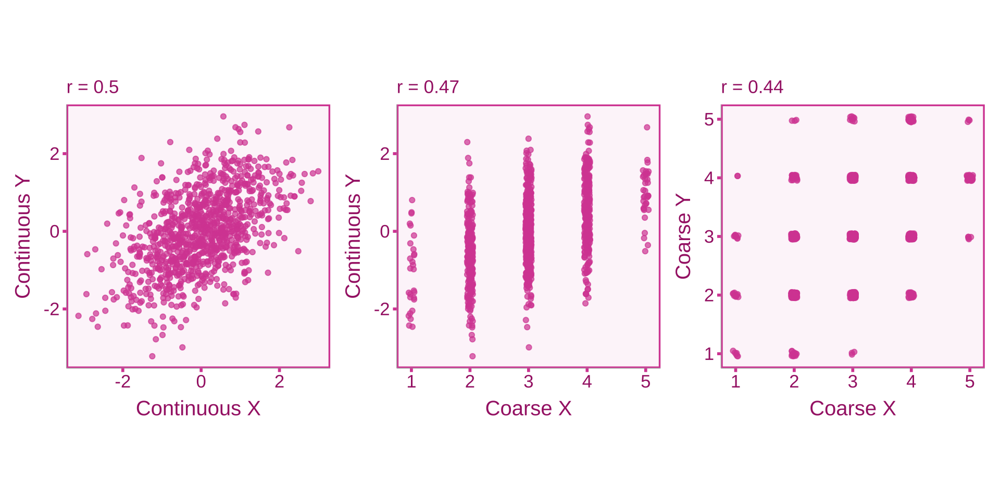
Artifact: Selection Effects
Types of Selection Effects
Range Restriction: Selection of individuals into a sample creates a sample with less variation than in the population
Range Enhancement: Selection of individuals into a sample creates a sample with more variation than in the population
Direct Selection: Selection is based one of the variables of interest
Indirect Selection: Selection is based on a variable that is correlated with the variables of interest
An Index of Range Restriction/Enhancement
A \(u\)-ratio quantifies the ratio of the standard deviation in the sample to the full population. For example, let’s say we conducted a study regarding SAT scores in college students. The ratio between SAT scores in the applicants (SD=150) and admitted students (SD=200)
\[
u = \frac{SD_{\text{admitted}}}{SD_{\text{applicants}}} = \frac{150}{200} = 0.75
\]
Since the \(u\)-ratio is below 1, this indicates range restriction in the admitted students.
Correlations Corrected for Measurement Error and Univariate Direct Range Restriction:
---------------------------------------------------------------------------------------
value CI_LL_95 CI_UL_95 n n_effective
1 0.41 0.156 0.604 100 54.1
Correlations Corrected for Measurement Error and Univariate Indirect Range Restriction:
---------------------------------------------------------------------------------------
value CI_LL_95 CI_UL_95 n n_effective
1 0.41 0.156 0.604 100 54.1
In sum, artifacts are introduced into virtually every single study we conduct. Applying corrections can provide unbiased estimates of the target estimates.
The book Artifact Corrections for Effect Sizes will be an open-access guide to the theory and application of artifacts and their corrections. I will post about the release on Twitter (MatthewBJane).
Thank You
Thanks to my unbelievable team of advisors that have been a tremendous help on this project.
Dr. Blair T. Johnson
Dr. Christopher Rhoads
Dr. Elizabeth Schifano
References
Dahlke, Jeffrey A., and Brenton M. Wiernik. 2019. “Psychmeta: An R Package for Psychometric Meta-Analysis.”Applied Psychological Measurement 43 (5): 415–16. https://doi.org/10.1177/0146621618795933.
Haertel, Edward H. 2006. “3. Reliability.” In, 4th ed.
Hunter, John E., and Frank L. Schmidt. 1990. Methods of meta-analysis: correcting error and bias in research findings. Newbury Park: Sage Publications.
Wiernik, Brenton M., and Jeffrey A. Dahlke. 2020. “Obtaining Unbiased Results in Meta-Analysis: The Importance of Correcting for Statistical Artifacts.”Advances in Methods and Practices in Psychological Science 3 (1): 94–123. https://doi.org/10.1177/2515245919885611.